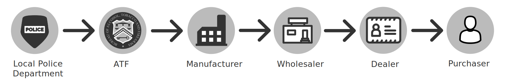

This report was prepared by the Office of the Attorney General of the State of New York’s Senior Advisor and Special Counsel Nicholas Suplina, Director of Research & Analytics Lacey Keller, and Data Scientist Meredith McCarron. Special thanks to the Research & Analytics Department and the Organized Crime Task Force (OCTF) for their assistance preparing the report.
Background
There are about 11,000 homicides by gun in America annually,[1] and each represents a multifold tragedy: a life-lost, a family destroyed, a community scarred. Beyond the yellow-tape of the crime scene, the bereaved ask "Who did this?" For those committed to stopping gun violence, the next question must be: “Where did they get the gun?” This report begins to provide an answer for guns recovered in New York.
The New York State Office of the Attorney General (NYAG) is committed to preventing gun violence across New York State. It does so through its statewide gun buyback programs, defense and enforcement of New York’s gun safety laws, and aggressive disruption of violent gangs and gun trafficking rings by its Organized Crime Task Force (OCTF), which has recovered hundreds of crime guns in recent years.[2]
Crime Gun
Any gun connected to a crime that is recovered by law enforcement.
A “crime gun” is any gun connected to a crime that is recovered by law enforcement. The Bureau of Alcohol, Tobacco, Firearms, and Explosives (ATF) can “trace” these guns which, when successful, can begin to answer the question of “where did they get the gun?” While review of a single trace may reveal data that help solve a crime, comprehensive analysis of trace data can detect regional patterns of crime gun movement into and within a state. These patterns can be used to create sound policies and targeted interdiction strategies aimed at combatting trafficking of dangerous firearms.
The NYAG created this first-of-its-kind report and interactive Tracing Analytics Platform to better understand gun trafficking patterns and to assess the efficacy of laws in combatting illegal guns in New York State. The Platform further allows local law enforcement to reach their own conclusions about how to address crime guns in their area.
While federal appropriations riders known as the Tiahrt Amendments dramatically restrict ATF’s ability to use and distribute trace data, ATF can share such information with local law enforcement and prosecutors. Like ATF, these groups can publish aggregate statistical data regarding firearms trafficking patterns.[3]
By collecting and analyzing New York aggregate gun trace data for 2010-2015, NYAG identified regional differences in trafficking patterns while discovering a commonality among crime guns recovered across New York State: New York’s gun laws have curbed access to the guns most associated with violent crimes, handguns. But the ready availability of these guns in states without these protections thwarts New York’s effort to keep its citizens safe. Our analysis has led us to several recommendations, including calling on the federal government to close the so-called “gun show loophole” which allows private sales of firearms without a background check, and urging states to require permits for handguns, which has worked effectively in New York to keep these dangerous guns out of the hands of criminals.
Gun Safety is a State's Right
The Gun Control Act of 1968 has two primary goals: to keep guns out of the hands of criminals and others who should not have them, and to assist law enforcement in investigating gun-related crimes.[4] The focus of the Act is the regulation of federally licensed firearms dealers (also known as federal firearms licensees or “FFLs”).[5] Under the Act, to maintain a license to commercially sell firearms, FFLs must obey both federal and state restrictions.[6] On the federal side, FFLs cannot sell firearms to certain prohibited persons, (e.g., felons, fugitives, drug users),[7] must have the purchaser of a firearm complete disclosures on a federal form,[8] and must perform a background check on the person who is purchasing the weapon.[9]
FFLs must not only abide by the laws of the state in which they operate, but they must also conduct their business in a manner that respects other states’ gun laws. For instance, an FFL cannot ship a firearm to a private person in another state, nor can they sell a gun to a person known to reside in another state, if doing so violates that state’s law.[10] Through these requirements, the federal statute both creates a baseline level of protection against guns getting into the wrong hands, while simultaneously preserving every state’s right to advance its own stronger gun policies.[11]
New York exercises its right to regulate firearms with some of the strongest gun safety laws in the country.
New York asserts this right with some of the strongest gun safety laws in the country. For instance, in an effort to address the carnage associated with mass shootings, New York recently banned assault weapons, prohibited the sale of high capacity magazines, and created a system for preventing people with dangerous mental infirmities from obtaining a gun.[12] So that criminals or other prohibited persons cannot obtain firearms in non-FFL transactions, the State requires universal background checks, including at gun shows and in private sales.[13] To prevent criminals from gaining ready access to handguns — the firearm most often employed in homicides and violent gun crimes[14] — New York prohibits purchase or ownership of a handgun without first applying for and receiving a license, a comprehensive process that requires fingerprinting, photos, background check, and character references.[15] All licenses and associated handguns are recorded in a New York database and licenses must be periodically renewed or recertified.[16] Finally, as part of its gun trafficking interdiction efforts, New York requires state or local law enforcement agencies to request firearm traces through ATF for every recovered firearm with an unknown source.[17]
Federal Firearms Tracing is Imperfect but Invaluable
Though virtually all guns in the United States begin as legal firearms, when recovered by law enforcement in connection with a crime, they become known as “crime guns.” To assist law enforcement in solving and understanding gun-related crimes, the Gun Control Act of 1968 authorized ATF to administer firearms tracing of crime guns.[18] Federal law currently prohibits the creation of a comprehensive central database of firearms or firearms purchasers that law enforcement could access when recovering a crime gun.[19] Therefore, to trace a single firearm, ATF must manually recreate the history of the gun from its manufacture to its last known retail sale. If the chain of information is broken at any step of the process (due to records being lost, discarded, destroyed, or never created), the recovering agency will not receive complete trace information.
There is no national database of guns in the U.S.
To initiate a trace, ATF collects the make, model, and serial number of the gun from the recovering law enforcement agency. Next, ATF contacts the manufacturer to try to determine to which wholesaler the gun was first sold. If that data is available, ATF then contacts the wholesaler to determine to which dealer (FFL) the gun was sold. If that data is available, ATF then contacts the dealer (FFL) to collect records of who purchased the gun, where, and when. And if that data is available, ATF returns a completed “trace” of the firearm to the recovering agency with as much data as it was able to obtain through the trace process. Importantly, these traces do not capture any unrecorded, private sales associated with a firearm — sometimes called “gray market” sales.

The tracing process is time-consuming and prone to failure. Many of the records sought are lost, destroyed, incomplete, or otherwise missing. For instance, of the 52,915 New York State trace records covered by this report, ATF was unable to obtain any state of origin for 12% of traces and a date of retail purchase for approximately 42% of traces. Following the methodology of ATF, the percentages of out-of-state, low time-to-crime, and trafficked guns are calculated using only the guns where the respective attribute(s) are known.
Notwithstanding its limitations, trace data can be crucial to understanding when and how a gun was diverted from a legal firearm to a crime gun. A “diverted” firearm is one that has moved from the legal to the illegal marketplace through an illegal method or for an illegal purpose. Gun traffickers trade in diverted firearms and obtain them in a variety of ways: from corrupt FFLs or FFL-employees who sell off-the-books or without required background checks and paperwork; thieves who steal from FFLs or private owners; or straw purchasers – those who buy a gun, complete required paperwork, and undergo a background check on behalf of another, prohibited, person.[20]
Trace data can help detect the sources of firearms trafficking.
When it is available, comprehensive trace data can help detect the sources of firearms, track the intrastate and interstate movement of crime guns, and ultimately inform how law enforcement deploys resources and develops strategies to reduce firearms-related violence.[21]
Crime Guns with Recent Unrecorded Transactions or Out-of-State Purchases Were Likely Trafficked
Certain trace data points are particularly helpful to identify likely-trafficked guns. The most important is “time-to-crime” which is the time between the recorded date of purchase compared to the date of recovery. Guns that have a low “time-to-crime” — those firearms that are recovered by law enforcement within three years of their purchase — carry strong indicia that they were purchased with the intent to be diverted to criminal use.[22] Other important trace data points include information about whether the possessor of the gun at the time of recovery is different than the person who purchased the gun and whether the state of purchase is different than the recovery state. If a gun has been recovered in a short period of time and also moved across state borders and/or between private individuals it is likely the gun was recently trafficked.
As described more fully in the methodology section, we combined these data points into a numeric snapshot that estimates the crime gun’s likelihood of having been recently trafficked. For every gun in the dataset, we created a score for each of (i) time-to-crime (“TTC”), (ii) border-crossing (“BC”), and (iii) unrecorded gun transactions (“UGT”). These three scores were then weighted and added together to form one “Trafficking Index” with scores ranging from 0-100. Because of its key link to trafficking, time-to-crime (TTC) was weighted more in the Index than moving across state lines (BC) and an unrecorded gun transaction (UGT). But because a border-crossing or unrecorded-gun-transaction are conditions precedent for trafficking, a Trafficking Index score will not be “high” without at least one of these attributes. A gun with a high Trafficking Index (closer to 100) suggests it was trafficked. Likewise, an area with a high average Trafficking Index has a higher proportion of trafficked guns. Even though a high score strongly suggests trafficking, we use the term “likely-trafficked” in the report because trace data alone cannot definitively determine whether a gun was trafficked.
That said, any attempt to use trace data alone to identify trafficked guns will lead to underreporting; a low Trafficking Index does not mean a gun was not trafficked. First, in the NYAG’s experience, and as acknowledged by ATF, many older, used-guns are obtained and sold by traffickers and, even if recovered immediately upon entering New York, will lead to a low Trafficking Index score because of a longer time-to-crime.[23] Second, a gun may be purchased anew and trafficked immediately into New York, but not be used in a crime or recovered for years, thus leading to a lower trafficking index score. In light of these facts gleaned from NYAG gun trafficking cases, we have weighted time-to-crime accordingly in our index to allow for guns slightly older than three years to be included. Third, because nearly half of all recoveries in our data have no recorded date of purchase, they are not given a Trafficking Index score, though many of them may be trafficked firearms. For this reason, when we express percentages of likely-trafficked guns, we compare raw numbers only to those guns for which we have time-to-crime data.
Key Terms
Time-to-Crime
Time Between The Recorded Date Of Purchase Compared To The Date Of Recovery.
Border Crossing
Guns Recovered In New York Where The Original State Of Purchase Is Not New York.
Unrecorded Gun Transaction
Guns Where The Possessor Was Different Than The Original Purchaser.
Trafficked
Guns That Were Purchased With The Intent To Sell Or Transfer Illegally.
The NYAG considers firearms with a Trafficking Index greater than or equal to 85 to have been likely purchased with the intent to illegally divert the firearm. A score of 90 or more is highly indicative that the gun was recently trafficked. Understanding the attributes of these weapons is extremely useful to law enforcement’s efforts to combat gun trafficking.
A Trafficking Score Of 90+ Is Highly Indicative Of Recent Trafficking.
New York Trafficking Patterns
We reviewed New York aggregate crime gun trace information from 2010-2015. While our Tracing Analytics Platform enables New Yorkers to explore the aggregate data themselves, here are the highlights:
52,915
Recoveries
New York State law enforcement agencies recovered 52,915 firearms between 2010-2015. In 2015 alone, New York recovered 7,827 guns.
74%
Originated Out-of-State
34,344 of the 46,514 recovered guns with a known source state originated outside of New York – well above the national average. Almost half of these guns originated in six states known to have weak gun laws.
75%
Handguns
39,491 recoveries were handguns, of which 86% originated out-of-state. Handguns are known to be the weapon of choice among violent criminals.
19%
Low Time-to-Crime
Of the 30,606 guns with complete time-to-crime data, 5,873 were recovered within three years of the last known recorded purchase. 2,437 guns were recovered within one year of purchase.
6%
Purchaser = Possessor
Only 3,208 guns were recovered from a possessor who was also the original purchaser of the gun. About half of these were low-time-to-crime guns.
1 in 5
Recently Trafficked
Of the 30,595 guns for which we have complete data, 6,162 exhibited indicia of recent trafficking and scored 90 or above in the Trafficking Index.
57%
Out-of-State Handguns
For all the guns recovered in New York State, over half belong to a single category: out-of-state handguns. If we count only those guns for which we have complete data, 65% percent of all recoveries are out-of-state handguns.
Comparison of New York recoveries to national averages for 2015 provides important context for understanding New York’s crime gun and trafficking patterns relative to other states. In 2015, New York recovered 7,827 guns, a relatively low number for a state its size according to NYAG's data.[24] And with about 40 recoveries per 100,000 people in 2015, New York had half the per-capita recoveries compared to the national per-capita average (84 per 100,000 people).[25]
However, our data shows that for guns with a recorded state of purchase (6,799), 75% of crime guns originated out-of-state in 2015, more than double the national average (29%) of out-of-state sources of crime guns.[26] The difference for low time-to-crime guns is even starker: nationwide, only 17% of guns recovered within three years of purchase originated out-of-state, compared to 76% of these guns in New York in 2015.[27]
As described in more detail below, our analysis of the data revealed variation among New York’s regions as to out-of-state contributions of crime guns and also found some commonality among these regions as to the sources of likely-trafficked guns.
New York Has Seven Distinct Markets for Crime Guns
High total recoveries of crime guns in an area show that illegal guns are in demand and represent a possible “market“ jurisdiction for gun traffickers. This map of all recoveries in New York from 2010-2015 shows clusters in and around New York’s biggest cities: New York City, the Lower-Hudson Valley (including the cities of Yonkers, White Plains, Newburgh, & Poughkeepsie),[28] the Capital Region (including Albany, Troy and Schenectady),[29] Syracuse, Rochester, and Buffalo.
Total Recovered Guns:
Percent Originating Out-of-State:
Trafficking Index:
Total Recovered Handguns:
Variation in Out-of-State Sources by Market Shows Impact of State and Local Laws
Of the 52,915 crime guns recovered in New York between 2010 and 2015, 74% have a recorded sale from an FFL located in a state other than New York. As the chart below shows, the number of guns originating out-of-state varies by crime gun market. In every market except New York City, the percentage of in-state guns increases when we look only at low time-to-crime guns. In contrast, among low time-to-crime handguns, the in-state figure drops to 14% as every market sees a marked increase in percentage of out-of-state recoveries.
New York's Likely-Trafficked Guns Predominately Come from Iron Pipeline States
The NYAG’s Organized Crime Task Force and other law enforcement agencies have frequently disrupted gun trafficking schemes that purchase firearms, predominately handguns, in states south of New York along the I-95 corridor and that transport the weapons to New York markets. These states — Pennsylvania, Virginia, North Carolina, South Carolina, Georgia, and Florida — have been identified as net “exporter” or “supplier” states[30] and the steady stream of firearms along the interstate has earned it the nickname “the Iron Pipeline.”[31] Our analysis of the data shows these states deserve their anecdotal nickname. In addition to the Iron Pipeline states, Ohio, which has easy access to western New York via I-90, stands out as an important but often overlooked source of crime guns, particularly to the Buffalo, Rochester, and Syracuse markets.
The below map shows the percentage of New York’s likely-trafficked guns, those guns with a trafficking index of greater than or equal to 90. There were 6,162 guns recovered around the State in this set, of which 5,793 (94%) were recovered in a market jurisdiction.
New York’s Gun Traffickers Choose States with Weak Gun Laws to Get their Guns
There were certain commonalities among the states that supply New York with its trafficked guns. First, all are “net exporters” of crime guns according to ATF national statistics.[32] Each also generally scores poorly on objective measures of the strength of gun safety laws.[33] In particular, these states lack gun laws fundamental to preventing illegal diversion. For instance, all but one of these states have no requirements for background checks for private sales or at gun shows (Pennsylvania, and only for handguns). And all but one do not require a permit prior to a handgun purchase (North Carolina). This is a stark contrast to the other states along I-95 south, which were responsible for just over 2% of New York’s trafficked guns combined. New Jersey, for instance, requires a permit for handguns and long guns, each requiring a background check. Even though New Jersey shares a border with and has several major arteries into New York, it contributed less than one percent of New York’s trafficked guns.
From New York’s vantage point, the correlation between state and local laws and the source of trafficked guns is undeniable. We believe the weakness of the gun laws in the Iron Pipeline states and Ohio, combined with direct access to New York via interstate highways and public transportation, has made them become the source-of-choice among gun traffickers running guns into New York.[34]
Total Guns to New York:
Percentage of Trafficked Guns to New York:
Trafficking Index:
Handguns Sent to New York:
Recommendations
New York’s leaders and citizens are deeply committed to ending gun violence and illegal guns in the State. Efforts to reduce gun violence and the scourge of illegal guns through changes in law have been largely successful.
Yet it is often said that gun laws can’t work to keep guns from criminals because criminals don’t obey laws. Critics point to gun violence in American cities that have strong gun laws as evidence that the laws should be abandoned. The lie in those arguments is laid bare by the data: gun laws do make it harder for criminals to get guns where those laws are in effect. But it is no doubt true that existing state gun laws are made far less effective when there are guns readily available to criminals in a nearby state with weaker laws.
With no federal framework or baseline for ensuring background checks for private sales or permits for purchasing handguns, New York is at the mercy of states more committed to protecting firearms commerce than protecting the citizenry from the violence associated with illegal guns. The federal government’s inaction on sensible national gun laws, coupled with the lax laws of other states, make states like New York a target of trafficking. In short, New York cannot fully defend itself by itself.
Below we list recommendations at the federal and state level that would help prevent illegal guns from pouring in to New York from other states and propose recommendations for New York State and localities on how to improve in this area absent outside action.
Federal
Require Universal Background Checks; Close the “Gun Show Loophole”
Approximately 90% of the guns in our data had an unregistered transaction, and it is likely that many of these guns changed hands without a background check because private sales under federal law do not require an FFL-administered background check. Requiring these simple checks for private sales and at gun shows will prevent unwitting firearm sales to dangerous and disqualified persons.
Make Gun Trafficking a Federal Crime
Currently, there is no federal law prohibiting gun trafficking. Last year, Senator Kirsten Gillibrand (D-NY) and Senator Mark Kirk (R-IL) introduced the Gun Trafficking Prevention Act of 2015, in effort to change this. The Act makes it illegal to traffic or conspire in the trafficking of a firearm, to deliver or receive two or more firearms where the individual knows or has reason to believe that the firearms are being sold to a prohibited person, and to lie on an ATF form. Because it carries stiff penalties and allows federal, state, or local law enforcement to use the law, passing the law would help crack down on interstate firearms trafficking.
Expand Access to Summary Trace Data
At present, restrictions in federal appropriations bills – the Tiahrt Amendments – prevent ATF from sharing trace data with agencies and institutions that are not part of law enforcement, but who could help utilize crime gun data to make informed gun policy decisions. Even summary level data – like the kind analyzed in this report – can illuminate unseen problems and trends. If Congress is committed to curbing gun violence, it should loosen the restrictions.
State
Require Licenses to Own Handguns
The data in this report suggest that New York’s licensing requirement for handguns is a strong deterrent for criminals who seek to obtain these firearms. Simply put, they go elsewhere. No state should want to be a destination for violent criminals or a promoter of gun trafficking syndicates. Licensing requirements for handguns are the best way to stop criminals from obtaining the firearms most often used in violent crimes without placing a heavy burden on lawful gun owners.
New York
Pass the Gun Kingpin Bill
Since law enforcement cannot completely stop the out-of-state sale of guns to criminals who import them to New York, the State should amend the penal law to punish traffickers so severely that the business becomes too risky a proposition. Presently, the highest criminal charge gun traffickers can face is a B felony, for illegal sale or illegal possession of ten or more firearms, and there is no difference in charge or penalty between a trafficker who sells 10 or 100 guns.[47] A bill introduced by Senator Jeffrey Klein and Assemblymember Amy Paulin and supported by Attorney General Schneiderman, Manhattan District Attorney Cyrus Vance, the District Attorney’s Association of New York, and the NYPD, would make the illegal sale or illegal possession of over 20 firearms an A-1 felony, with a sentence of 25 to life. The Legislature should pass it and send a message to traffickers who think New York is an attractive market for illegal gun sales to think again.
Share Gun Trace Data and Intelligence
State and local law enforcement in New York should continue to work together to fight the scourge of illegal guns. In addition to using this report and the Tracing Analytics Platform to better target trafficking, we should explore other ways to use trace data to crack down on corrupt FFLs, straw purchasers, and interstate gun traffickers. On this score, NYAG encourages all law enforcement entities to subscribe to eTrace, ATF’s online platform for trace data, and to take advantage of the new functionality that allows agencies to share their trace data with other law enforcement agencies in the state. Doing so will create better collaboration between law enforcement entities and will allow for better subsequent analysis of trafficking patterns.
Tracing Analytics Platform (TAP)
Our Tracing Analytics Platform isn't fully mobile-compatible, but we encourage you to take a look on your laptop or desktop in full-screen.
Methodology
This section highlights the steps the New York State Office of the Attorney General (“NYAG”) took to collect, clean, and analyze the data outlined in this report.
Data Collection
ATF Trace Data
On June 13, 2016, the Federal Bureau of Alcohol Tobacco Firearms and Explosives ("ATF") provided the data used in this report to the NYAG. Pursuant to the Consolidated and Further Continuing Appropriations Act, 2012, PL 112-55 Nov. 18, 2011), commonly referred to as the “Tiahrt Amendments” to the federal budget, ATF is severely restricted in what trace data it may share and with whom, but may share such data with state and local law enforcement and prosecutors. While the data included summary-level information on the state and date of purchase, recovery location, and certain information about the firearm, it did not, for instance, include the name or address of Federal Firearms Licensed (FFL) dealers who sold the guns ultimately recovered in New York, nor the name and address of the recorded purchasers of the guns, nor the name and address of the possessor of the guns. (ATF stated that such information could be made available with consent of the original tracing parties.) ATF also stated that NYAG could use such information to produce public aggregate statistical reports similar to those published by ATF.
According to ATF, the data included/excluded the following[48]:
"[A]ll firearms with a recovery state of New York, or, if the recovery state was not provided, the requesting agency state was used if the agency had jurisdiction only within New York."
"Traces with a recovery date between January 1, 2010 — December 31, 2015 were selected. However, if the recovery date was blank, traces with an entry date between January 1, 2010 — December 31, 2015 were also selected."
"Duplicate, Sensitive, Firearm Not Recovered, Gun Buyback and Firearm Turned In traces were excluded when present."
"This information was queried from the Firearms Tracing System (FTS) on May 16, 2016 and all traces may not have been submitted or completed at the time of this data extract."
NYAG additionally removed from the data 309 guns recovered in Delaware County on 01/16/2014. This recovery reflected the seizure of inventory of an FFL that was operating unlawfully.
US Census Bureau
We downloaded United States Census Bureau Annual Estimates of the Resident Population for each New York State county from 2010 through 2015. This data is used later to calculate firearm recoveries per 100,000 residents by year.[49]
Data Quality
As noted, the data provided summary-level information for recovered firearms in New York State between 2010 and 2015. The table below shows the number of distinct values and percentage of null values for each of the variables that we relied on in the report. For example, 12% of the traces did not have a state name for the last known sale from an FFL. All percentages, unless otherwise noted in the report, use the number of non-null values as denominator. Where a data point is missing from a gun, we do not include it when calculating percentages of gun characteristics. For example, for statewide calculations, 46,514 is used for out-of-state percentages, 30,606 is used for calculating percentage of low time-to-crime, and 30,595 is used to calculate percentage of guns that were trafficked.
Variable Name
Description
Distinct Values
Percentage Null Values
ffl_state_name
State of last known sale from Federal Firearms Licensed (FFL) dealer
ATF-calculated field denoting where the date of birth for the last recorded purchaser from a licensed FFL matches that of the possessor of the recovered firearm. This field contained only the number one (“1”) or null value – no identifying information about purchaser or possessor was included in the data.
ATF-calculated field denoting where the name for the last recorded purchaser from a licensed FFL matches that of the possessor of the recovered firearm. This field contained only the number one (“1”) or null value – no identifying information about purchaser or possessor was included in the data.
ATF-calculated field denoting where the address for the last recorded purchaser from a licensed FFL matches that of the possessor of the recovered firearm. This field contained only the number one (“1”) or null value – no identifying information about purchaser or possessor was included in the data.
2
98%
recovery_city
City where firearm was recovered
1,332
0%
recovery_county
County name where firearm was recovered
223
6%
recovery_date
Date when firearm was recovered
2,192
1%
recovery_zip
Zip code where firearm was recovered
3,220
2%
weapon_type
Type of weapon recovered
14
0%
year
Year of firearm recovery
6
0%
Data Cleaning
The original dataset consisted of 53,224 tracing records. 309 traces from January 16, 2014 in Delaware County, New York were identified as part of an ATF seizure of an FFL’s inventory. These traces were subsequently removed to prevent undue influence on the analysis. The revised dataset analyzed consisted of 52,915 tracing records.
A unique identification number ID was added to every recovery in the data set.
Two ATF data fields — Recovery_zip and Recovery_county — required additional cleaning and standardization to be used in the analysis. The steps taken to standardize and clean those fields are listed below.
Recovery Zip
Recovery_zip was standardized to five digits in as many cases as possible. After standardization, 1,388 traces had invalid zip codes that were included in the analysis, but not displayed in any zip-code level mapping.
Recovery County
Recovery_county was updated for 4,442 traces for any null values, spelling errors, or inaccuracies. To clean and standardize these traces, the correct county was assigned to the trace records based off Recovery_zip or Recovery_city. Recovery_zip was utilized first in order to assign the correct county and if this value was null or invalid, then the correct county was assigned based off of Recovery_city.[53]
Assessing Guns for Likelihood of Trafficking
We created and assigned each gun in the data three scores to quantify the likelihood that the gun was trafficked. Each of these categories was derived from our experience with trafficked guns as well as our research into the use of trace data by ATF and others to determine whether it was likely that a particular firearm was trafficked.
Guns recovered within three years of purchase have a low “time-to-crime” and were likely purchased with the intent to be diverted to criminal use. Where a low time-to crime gun has also moved across state borders or has been sold in an unrecorded transaction, trafficking is highly likely. For every gun in the dataset, we gave it a value for each of (i) time-to-crime (TTC), (ii) border-crossing (BC), and (iii) unrecorded gun transactions (UGT), which we weighted and combined to make a 0-100 “Trafficking Index.”
1. Time-to-Crime:
The chart below shows all New York crime gun recoveries with a known date of purchase. The most frequent time-to-crime of recovered guns in New York is less-than-one year with 2,437 recoveries, followed by 1,835 with a 1-2 year time-to-crime, and 1,601 guns with a 2-3 year time-to-crime. The long “tail” shown means that a simple “average” time-to-crime is not a useful metric if one is trying to understand the characteristics of potentially trafficked guns.
The most frequent age of crime guns in New York is less-than-one year with 2,437 recoveries, followed by 1,835 with a 1-2 year time-to-crime, and 1,601 guns with a 2-3 year time-to-crime. The long “tail” means that a simple “average” time-to-crime is not a useful metric if one is trying to understand the characteristics of potentially trafficked guns.
For purposes of this report, we created a system for standardizing the time-to-crime of a crime gun. First, we assigned every crime gun a time-to-crime score (TTC) which inversely weights the gun for its time-to-crime, with a maximum recovery time of 600 months (50 years).[54] The TTC is ((600 - [# of months between sale and recovery]/600). If a gun was recovered immediately after it was purchased it would have a score of 1 and carries a high likelihood of being purchased with intent to be used in a crime. A TTC of over .94 (recovered within three years of recorded purchase) is “high”. If a gun was recovered 600 months after it was purchased, it would have a TTC of zero. Any gun recovered more than 600 months after it was purchased also scores zero.
2. Border-Crossing
Gun trafficking does not require a state-border crossing, but guns that do cross a state-border (especially within a short period of time) are more likely to be trafficked. Though ATF did not provide NYAG detailed data about the FFLs who sold the guns recovered in New York, it did provide the state of each FFL (the “source state”) where such data was known. For every crime gun with a known source state, we gave it a Border Crossing score of 1 if it originated outside of New York, and a score of 0 if it originated inside New York.
3. Unrecorded Gun Transactions
ATF did not provide personal identifying information for the gun purchasers and possessors in our data set. However, it noted when the purchaser had the same name, birthdate, or address as the ultimate possessor at the time of recovery, facts that strongly suggest the gun did not change hands between purchase and recovery. For 6% of recovered guns in New York State, the person in possession of the recovered firearm was the last known purchaser for that same firearm.
For all other crime guns in the set, there is a least one unrecorded (though not necessarily illegal) transaction, which is a condition precedent for trafficking. If there is an unrecorded gun transaction (UGT) associated with a crime gun in our set, we gave it a UGT score of 1; if not, then zero.
Trafficking Index
We weighted the three above scores to create a 0-100 Trafficking Index. The weighted equation for the Trafficking Index is:
The time between the gun purchase and gun recovery (TTC) is given the greatest weight, while moving across state lines (BC) and an unrecorded gun transaction (UGT) are incrementally weighted. This way, only guns that are reaching crime scenes quickly will be tagged as potentially trafficked, while border crossings and unrecorded transactions elevate low time-to-crime guns to the top of the index as more likely-trafficked. Each gun in the data set was assigned a Trafficking Index score based on these criteria.
Analysis and Visualization
The data was imported into Tableau Desktop Professional Edition 9.0 for analysis and visualization. Tableau 9.0 was also used to create an interactive dashboard of the data published in the Tableau Public repository. To see the calculations that we ran in Tableau, please open this site on your laptop or desktop at full screen-width.
The data was imported into Tableau Desktop Professional Edition 9.0 for analysis and visualization. Tableau 9.0 was also used to create the interactive dashboard of the data, the “Tracing Analytics Platform,” published in the Tableau Public repository. The following groupings and calculations were made:
Total Recovered Guns
A count of each line of data, or each firearm recovery, in the dataset by counting the distinct number of [ID]s
Recovery Market
Recovery Market was defined as the following recovery_counties:
Buffalo – Erie and Niagara
Capital Region – Albany, Saratoga, Schenectady, and Rensselaer
New York City – Bronx, Kings, New York, Queens, and Richmond
Long Island – Nassau and Suffolk
Lower Hudson Valley - Dutchess, Orange, Putnam, Rockland, Ulster, and Westchester
Rochester – Monroe
Syracuse – Onondaga
Source State Group
FFL_state_name was grouped into those FFLs located in New York State (“In-State”), out of New York State (“Out-of-State”), and blank values (“Unknown”).
Iron Pipeline
Unless otherwise noted, consists of guns sold by a dealer (FFL) located in Pennsylvania, Virginia, North Carolina, South Carolina, Georgia, and Florida.
Out-of-State Recoveries
A count of the recovered firearm when the [FFL STATE NAME] was not null or not equal to New York State.
IF [FFL STATE NAME] <> "NEW YORK"
AND [FFL STATE NAME] <> "UNKNOWN" THEN 1
ELSE 0
END
% Out-of-State
Total [Out of State Recoveries] divided by [Total Recovered Guns] where the [FFL_state_name] is known. This calculation does not include the 12% of guns where [FFL_state_name] is not known.
SUM([OUT OF STATE RECOVERIES]) /
TOTAL(COUNTD(
IF [FFL STATE NAME]<>'UNKNOWN'
THEN [ID]
ELSE NULL
END))
Handgun Set
Includes all firearm recoveries where [weapon_type] was equal to pistol (“P”), derringer (“PD”), or revolver (“PR”).
Number of Handguns
A count of the recovered firearm when the firearm was in the Handgun Set, or when [weapon_type] was equal to pistol (“P”), derringer (“PD”), or revolver (“PR”).
IF [HANDGUN SET] = TRUE THEN 1 ELSE 0 END
% Handguns
The proportion of the total number of guns that are handguns.
[NUMBER OF HANDGUNS] / [TOTAL RECOVERED GUNS]
Time-to-Crime (Months)
The difference between the recovery date and the last recorded purchase date, in months.
(([RECOVERY_DATE] - [PURCHASE_DATE]) /365) * 12
Time-to-Crime (Years)
The difference between the recovery date and the last recorded purchase date, in years.
(([RECOVERY_DATE] - [PURCHASE_DATE]) /365)
Time-to-Crime (Years) Bin
Total Recovered Guns for the whole value range of [Time to Crime (Years)].
Short Time-to-Crime Recoveries
Guns with a time-to-crime of less than three years.
IF [TIME TO CRIME (YEARS)] < 3
THEN ID
ELSE NULL
END
% Low Time-to-Crime Recoveries
The proportion of short time-to-crime recoveries compared to all recoveries with a known time-to-crime.
[SHORT TIME-TO-CRIME RECOVERIES] /
COUNTD(IF [TIME TO CRIME(YEARS)] >= 0
THEN [ID] ELSE NULL END)
Purchaser Equals Possessor Total
Adds the three columns [purchaser_possessor_same_date_of_birth], [purchaser_possessor_same_last_first_name], and [purchaser_possessor_same_street_address].
IFNULL([PURCHASER & POSSESSOR - SAME (LAST, FIRST) NAME],0)
+IFNULL([PURCHASER & POSSESSOR — SAME DATE OF BIRTH],0)
+IFNULL([PURCHASER & POSSESSOR — SAME STREET ADDRESS],0)
Unrecorded Gun Transaction
If any of [purchaser_possessor_same_date_of_birth], [purchaser_possessor_same_last_first_name], and [purchaser_possessor_same_street_address] are not null, then the possessor of the firearm is considered to be the last recorded purchaser of the firearm. Mathematically, if the Purchaser Equals Possessor Total is greater than zero, then the possessor of the firearm is considered to be the last recorded purchaser of the firearm.
IF [PURCHASER EQUALS POSSESSOR TOTAL] > 0 THEN 0 ELSE 1 END
% Unrecorded Gun Transactions
Proportion of total guns that have an unrecorded gun transaction.
Indexes Time to Crime (Months) against 600 months (50 years). Any gun with a Time to Crime (Months) greater than 50 years is assigned a Time to Crime (Months) of 600 months or a Time-to-Crime Index of zero. Any gun with a Time to Crime (Months) less than 0, likely occurring from data entry errors, is marked as null. All other values between 0 and 600 are divided by 600.
IF [TIME TO CRIME (MONTHS)] >= 600 THEN 0
ELSEIF [TIME TO CRIME (MONTHS)] < 0 THEN NULL
ELSEIF [TIME TO CRIME (MONTHS)] >= 0
AND [TIME TO CRIME (MONTHS)] < 600
THEN ((600-([TIME TO CRIME (MONTHS)]))/600)
END
Trafficking Index
Assigns weights to and adds Time-to-Crime Index, Unrecorded Gun Transactions, and Out-of-state Recoveries. The total value ranges between 0 (lowest) and 100 (highest).
All guns with a trafficking index greater than or equal to 90. The term “recently trafficked” is synonymous with likely-trafficked and the two definitions are used interchangeably throughout the report.
IF [TRAFFICKING INDEX] >= 90 THEN [ID] ELSE NULL END
% Likely-Trafficked Guns
The proportion of guns that have a trafficking index greater than or equal to 90 where FFL_state_name and time-to-crime is known.
[LIKELY TRAFFICKED GUN] /
COUNTD(IF [FFL STATE NAME]<>'UNKNOWN'
AND [TIME TO CRIME (YEARS)]>=0
THEN [ID]
ELSE NULL END)
Recoveries Per 100,000 People
This calculation requires a data blend of two data sources in Tableau — firearm recoveries and U.S. Census data. NYAG downloaded United States Census Bureau Annual Estimates of the Resident Population for each New York State county from 2010 through 2015. Population and recovery data is joined where U.S. County Name is equal to the [recovery_county]. For a given year, this field takes the total number of recoveries for a given county divided by the population of that county within that year. If no [recovery_county] is selected, then the population for New York State is used. If no year or multiple years are selected, then the average population of 2010-2015 is used.
CASE ATTR([YEAR])
WHEN '2010' THEN (SUM([NUMBER OF RECOVERIES])/[POPULATION].[POPULATION])*100000
WHEN '2011' THEN (SUM([NUMBER OF RECOVERIES])/[POPULATION].[POPULATION])*100000
WHEN '2012' THEN (SUM([NUMBER OF RECOVERIES])/[POPULATION].[POPULATION])*100000
WHEN '2013' THEN (SUM([NUMBER OF RECOVERIES])/[POPULATION].[POPULATION])*100000
WHEN '2014' THEN (SUM([NUMBER OF RECOVERIES])/[POPULATION].[POPULATION])*100000
WHEN '2015' THEN (SUM([NUMBER OF RECOVERIES])/[POPULATION].[POPULATION])*100000
ELSE ((SUM([NUMBER OF RECOVERIES])/COUNTD([YEAR]))/[POPULATION].[POPULATION])*100000
END
For the above calculation, the variable [POPULATION].[POPULATION] is determined by the following formula:
IF ATTR([COUNTY])=ATTR([ATF SUMMARY DATA].[RECOVERY_COUNTY])
AND TOTAL(SUM([ATF SUMMARY DATA].[NUMBER OF RECOVERIES]))>1
THEN
CASE ATTR([ATF SUMMARY DATA].[YEAR]) WHEN
'2010' THEN [POP 2010] WHEN
'2011' THEN [POP 2011] WHEN
'2012' THEN [POP 2012] WHEN
'2013' THEN [POP 2013] WHEN
'2014' THEN [POP 2014] WHEN
'2015' THEN [POP 2015]
ELSE
(POP 2010]/ +
[POP 2011]/ +
[POP 2012]/ +
[POP 2013]/ +
[POP 2014]/ +
[POP 2015]/)/6
END
ELSE
(CASE ATTR([ATF SUMMARY DATA].[YEAR]) WHEN
'2010' THEN 19402920 WHEN
'2011' THEN 19523202 WHEN
'2012' THEN 19606981 WHEN
'2013' THEN 19691032 WHEN
'2014' THEN 19748858 WHEN
'2015' THEN 19795791 ELSE 19628131
END)
END
Footnotes
1. Kochanek et al., National Vital Statistics Reports: Deaths: Final Data for 2014, Ctrs. for Disease Control & Prevention 41 tbl.10 (2016), [link]
2. Press Release, Office of the New York Attorney General, A.G. Schneiderman Announces 11 Year Jail Sentence Of Defendant Convicted For Illegally Trafficking Untraceable 'Ghost Guns' (Apr. 18, 2016) [link], Press Release, Office of the New York Attorney General, A.G. Schneiderman & Commissioner Bratton Announce Takedown Of Brooklyn-Based Gun Trafficking Ring. (Nov. 19, 2014). [link]
3.See Consolidated and Further Continuing Appropriations Act of 2012, PL 112-55, 125 Stat. 609 (2011).
4.See Gun Control Act of 1968, 18 U.S.C. § 921 (1968).
5.See Huddleston v. United States, 415 U. S. 814, 825 (1974) (“[T]he focus of the federal scheme,” in controlling access to weapons, “is the federally licensed firearms dealer”).
6.See 18 U.S.C. § 921; Huddleston, 415 U.S. at 825.
9. Pursuant to the permanent provisions of the Brady Handgun Violence Prevention Act of 1993, FFLs must perform background checks on prospective firearms purchasers to ensure that the firearm transfer would not violate federal, state or local law. See 18 U.S.C. § 922(s).
10. 18 U.S.C. §§ 922(a)(2), (b)(2), (b)(3). In fact, 18 U.S.C. §922(b)(3) prohibits FFLs from selling a firearm to a person the FFL has reasonable cause to believe does not reside in the State in which the FFL is located, except that an FFL may make an in person sale of a rifle or shotgun to a person living in a different state, except where that state’s laws prohibit such a transaction.
11.See Bureau Of Alcohol, Tobacco Firearms & Explosives, U.S. Dep’t Of Treasury, Following The Gun: Enforcing Federal Laws Against Firearms Traffickers 4 (2000) [hereinafter "Following the Gun"].
14. Handguns are the firearm of choice among violent criminals. Over two-thirds of homicides are committed with firearms, of which over 70% are handguns. Over 88% of non-fatal, gun-involved violence is committed with a handgun. Michael Planty & Jennifer L. Truman, Bureau Of Justice Statistics, Office Of Justice Programs, U.S. Dep’t Of Justice, Firearm Violence, 1993-2011, at 3 tbl. 3 (2013).[link]
15.N.Y. Penal Law § 400.01. (Consol. 2016); New York State Police Form PPB-3 Pistol/Revolver License Application [link]
16.N.Y. Penal Law §§ 400.02, 400.10 (Consol. 2016). New York City additionally requires a similar process prior to lawful possession of rifles and shotguns. Administrative Code of the City of N.Y. § 10-303; Rules of the City of New York §§ 1-03, 3-02.
18. Bureau of Alcohol, Tobacco, Firearms & Explosives, U.S. Dep’t of Treasury, National Tracing Center Fact Sheet (Mar. 2016) (“Pursuant to the Gun Control Act (GCA) of 1968, the U.S. attorney general is authorized to administer firearms tracing. The attorney general has delegated ATF the sole federal agency authorized to trace firearms.”). [link]
19.See 18 U.S.C. § 926 (stating, in chapter discussing the Attorney General’s power to promulgate rules and regulations, “[n]o such rule or regulation prescribed after the date of the enactment of the Firearms Owners’ Protection Act [of 1986] may require that records required to be maintained under this chapter or any portion of the contents of such records, be recorded at or transferred to a facility owned, managed, or controlled by the United States or any State or any political subdivision thereof, nor that any system of registration of firearms, firearms owners, or firearms transactions or dispositions be established.”). In addition, the Tiahrt Amendments prohibit ATF from demanding a physical inventory of gun dealers or from electronically cataloguing the records of closed gun dealers, who must turn in their federal forms to ATF pursuant to 18 U.S.C. § 923(g)(4). See Consolidated and Further Continuing Appropriations Act of 2012, PL 112-55, 125 Stat. 609 (2011).
20.Bureau Of Justice Assistance, Office Of Justice Programs, U.S. Dep’t Of Justice, Reducing Illegal Firearms Trafficking: Promising Practices And Lessons Learned (2000) (“The role that firearms traffickers play in this flow of firearms cannot be underestimated. Some unlicensed firearms sellers purchase firearms in one state, then transport them to their state of residence and sell, trade, or distribute the firearms to criminal associates. Firearms trafficking, however, is not limited to unlicensed sellers—it also is practiced by unscrupulous federal firearms licensees (FFLs) who knowingly sell firearms to prohibited purchasers (such as convicted felons and drug dealers). In addition, there are many “straw purchasers” who buy firearms on behalf of persons who would be blocked by Brady checks from buying guns themselves. There are also those who steal guns and traffic in stolen firearms.”). Most “diverted” firearms are also “trafficked,” though that term is narrower and would not include, for instance, theft of a firearm for personal, criminal use. See Following The Gun, supra note 11, at 3. [link]
21.See Bureau of Alcohol, Tobacco, Firearms & Explosives, supra note 18; Presidential Memorandum — Tracing of Firearms in Connection with Criminal Investigations, 78 Fed. Reg. 4301 (Jan. 16, 2013).
22.See Following The Gun, supra note 11, at 25 (2000) (“ATF’s trace analysis in 27 cities suggests that up to 43 percent of traced firearms are new guns that have moved rapidly from the shelf of an FFL to recovery by law enforcement in three years or less, and, therefore, may have been trafficked.”).
23.Id. at 25 (“Focusing exclusively on new guns likely underestimates the true extent of gun trafficking.... While a trace of a crime gun may reveal that it was first sold at retail ten years before its recovery in crime, it is nevertheless possible that it was trafficked.... ATF investigative experience suggests that trafficking in secondhand firearms is indeed a significant crime and public safety problem. While new firearms figured more prominently, new and secondhand guns were trafficked together in about one third of the investigations.”).
24. ATF reports New York’s recoveries in 2015 to be 7,803. Office Of Strategic Intelligence And Information, Bureau Of Alcohol, Tobacco, Firearms & Explosives, ATF New York, January 1, 2015 – December 31, 2015, at 3 (2015).[link]
25. Total recoveries for the United States obtained through Bureau Of Alcohol, Tobacco, Firearms & Explosives, Firearm Types Recovered And Traced In The United States And Territories (2015).[link] Recoveries from New York State are from the data provided by ATF to the NYAG. All population estimates are based off of U.S. Census Bureau, Population Division, Annual Estimates Of The Resident Population: April 1, 2010 To July 1, 2015 (2015).[link]
26. ATF reports New York’s out-of-state percentage as 73%. The difference is that ATF is only counting guns traced to a state of purchase and a purchaser. When expressing percentage of purchases out-of-state in our data, we omit guns that have no recorded state of purchase, but do not exclude guns with incomplete purchaser information as we ATF did not provide us with that information. See Office Of Strategic Intelligence And Information, supra note 24.
27. Again, because ATF in its public reports only count gun with a successful trace to a state of purchase, purchaser, and recorded date of purchase, ATF’s calculated percentage of out-of-state low time-to-crime guns for New York is 76%. Id.
28. Includes the counties of Dutchess, Orange, Putnam, Rockland and Westchester.
29. Includes the counties of Albany, Saratoga, Schenectady, Rensselear.
30.Mayors Against Illegal Guns, Trace The Guns: The Link Between Gun Laws And Interstate Gun Trafficking 10-15 (2010).[link]
31. Press Release, N.Y.P.D. NYPD Firearms Investigation Unit Arrests Gun Trafficker for the Illegal Sale of 30 Firearms, (Oct. 16, 2013). [link]
32.See generally Bureau Of Alcohol, Tobacco, Firearms & Explosives, Firearms Trace Data – 2015 (2016).[link]
33.See Law Center To Prevent Gun Violence, 2015 Gun Law State Scorecard (2015) Mayors Against Illegal Guns, supra note 30, at 10-15. [link]
34. Press Release, Office of the New York Attorney General, A.G. Schneiderman Announces Guilty Pleas Of Reputed Gang Members Accused Of Operating Gun Trafficking Ring (June 1, 2016). [link]
44.Fed. Bureau Of Investigation, supra note 41; 18 U.S.C. § 922(t)(3).
45.Criminal Justice Information Services Division, Bureau Of Alcohol, Tobacco, Firearms & Explosives, U.S. Dep’t. Of Justice, Brady Law: Permanent Brady Permit Chart (Jun. 10, 2014).[link]
46.Ohio State Attorney General’s Office, Ohio’s Concealed Carry Laws And License Application (2015). [link]
48. Letter from Matthew Myerson, Division Counsel, New York, Bureau of Alcohol, Tobacco, Firearms & Explosives, to Nicholas Suplina, Senior Advisor and Special Counsel, Office of the New York Attorney General (June 13, 2016) (on file with author).
49.U.S. Census Bureau, Population Division, Annual Estimates Of The Resident Population: April 1, 2010 To July 1, 2015 (Dec. 2015)[link]
50. ATF Letter, supra note 48 (“Selections were automatically computed for identical information in the Date of Birth (DOB), Name & Street Address fields (denoted by a 1).”).
51. Id. (“The last and first name fields were combined to express a combination of names (last, first) in one field.”).
52. Id. (“The individual street fields were combined to determine a street address. Please note, some entries may not have automatically matched due to a slight variations (i.e. street direction, suffix abbreviations, spelling, spacing, etc.).”)
53. Seven New York state zip codes spanned multiple counties: 14726, 12944, 14011, 14560, 14081, 12083, and 12566. These records were assigned to the county which covered the majority of the zip code region.
54. Only 34 recoveries had a time-to-crime longer than 50 years. For our purposes, there was little difference between a 50 year-old gun and a gun older than 50 years. To simplify the calculations of the time-to-crime score, all guns over 50 years were treated as 50 years-old.